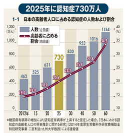

施設の入居・入院の備え保証人と身元引受人の確保が必要です。
身元引受人と保証人とは
施設の入居手続きや、入院の手続きを行う時、身元保証人、身元引受人が求められます。
身元を保証する人がいないために、施設への入所ができない場合や、遠い親戚に身元保証、身元引受を依頼しているため、あまり迷惑をかけたくないので気がかりだという方のために、身元保証・身元引受のサ－ポ－トをおこなっている団体・法人があります。そうした方のために利用できる身元保証・身元引受のサ-ビスです。
老人ホーム・介護施設の種類
はじめて老人ホーム・介護施設を検索するとき、「何から始めて良いかわからない」という方も多いのではないでしょうか。入居を予定している方の要介護度や医療依存度によって、希望条件にピッタリの老人ホーム・介護施設がひと目でわかります。
保証人と身元引受人とは
入院や施設入居時に保証人・身元引受人が必要です
施設の入居手続きや、入院の手続きを行う時、身元保証人、身元引受人が求められます。
身元を保証する人がいないために、施設への入所ができない場合や、遠い親戚に身元保証、身元引受を依頼しているため、あまり迷惑をかけたくないので気がかりだという方のために 身元保証・身元引受のサ－ポ－トをおこなっている団体・法人があります。そうした方のために利用できる身元保証・身元引受のサ-ビスです。

保証人、身元引受人の有無は、老人ホーム・介護施設の入居条件の一つです。保証人・身元引受人に、大きく分けると下記の4つを依頼するためです。①利用料の支払い、②緊急時の連絡先、③施設サービス計画書（ケアプラン）や治療方針の承諾、④入院や死亡時の対応 どの施設も入居契約の際は保証人・身元引受人が必要となります。保証人・身元引受人不在の方はこちらで詳しく解説しております。